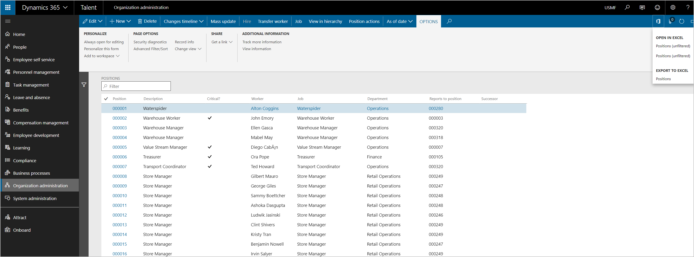
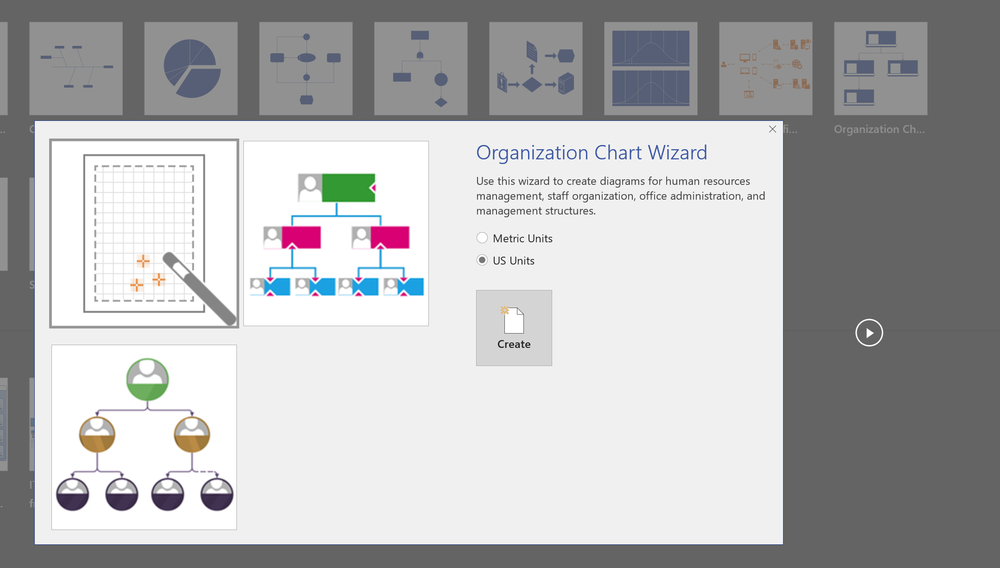

Avoid text truncation on the position hierarchy and export to Visio
Issue
When a customer views the position hierarchy in Microsoft Dynamics 365 Human Resources, the names of individuals and positions are truncated. Therefore, it can be difficult to take a screenshot, or to print and distribute the hierarchy.

Cause
This behavior is by design.
Resolution
Unfortunately, users can't easily change the size of the text. However, you can export the position hierarchy out of Human Resources and then import it into Microsoft Visio. Although the following article was written for Microsoft Dynamics AX 2012, the process still applies to Human Resources: Export a position hierarchy to Microsoft Visio.
Follow these steps to export to Visio.
In Human Resources, open the Positions list page.
To include more information in the organization structure diagram, add fields to the Positions list, so that they are available when you use the wizard later in this procedure.
On the Action Pane, select the Open in Microsoft Office button, and then, under Export to Excel, select Positions. Alternatively, press Ctrl+T.

Save the Excel file that is exported.

In Visio, select Visio - Create New, and select the Business template category.

Select Organization Chart Wizard, and then select Create.

Select Information that's already stored in a file or database, and then select Next.

Choose A text, Org Plus (*.txt), or Excel file, and then select Next.

Browse to select the exported Excel file that contains the position hierarchy, and then select Next.

Set the Name field to Position, set the Reports to field to Reports to position, and then select Next.

Select the fields that should be shown on each node, and then select Next.

Add the Position column to the Shape Data fields list, and then select Next.

Pictures aren't currently available. Therefore, on the next page, select Next.
Select I want the wizard to automatically break my organization chart across pages.

Select Finish.
If there are any positions that aren't in the structure, you're asked to include them in the diagram.
The diagram that is generated in Visio shows each manager on a separate worksheet.
Based on the fields that you selected to include in the diagram, each node shows the appropriate information when the Visio file is generated.

Additional option
In Human Resources, you might also be able to use the People workspace to view some hierarchy-related information.